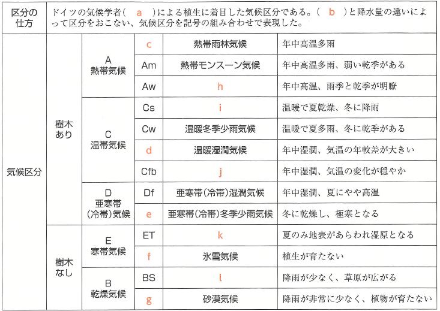
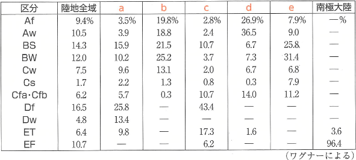

| 番号 | 問題 | 解答 |
|---|---|---|
| 1 | 植生の有無や違いを気温と降水量によって気候区分したドイツの気候学者は誰か。 | ケッペン |
| 2 | 熱帯気候(A)は1の気候区分では最寒月の平均気温が何℃以上か。 | 18℃ |
| 3 | 熱帯雨林気候(Af)は年中多雨であることが特徴であるが、その要因となっている気圧帯を何というか。 | 熱帯収束帯(赤道低圧帯) |
| 4 | 3の季節的南北移動によってAf気候の周辺に生まれる雨季と乾季がはっきりした気候を何というか。 | サバナ気候(Aw) |
| 5 | 熱帯気候(A)の中でモンスーンの影響を強く受け、雨季の雨量は多く、乾季は短く弱い気候を何というか。 | 熱帯モンスーン気候(Am) |
| 6 | 乾燥気候(B)の判定条件である樹木が育たない境界を何というか。 | 乾燥限界 |
| 7 | 乾燥気候(B)のうち、降水量が非常に少なく広大な砂漠となる気候を何というか。 | 砂漠気候(BW) |
| 8 | 乾燥気候(B)のうち、少量の雨によって背丈の低い草原となる気候を何というか。 | ステップ気候(BS) |
| 9 | 温帯気候(C)は1の気候区分では最寒月の平均気温は何℃以上何℃未満か。 | -3℃以上18℃未満 |
| 10 | 温帯気候(C)のうち、夏が乾燥し冬に降水がみられる気候を何というか。 | 地中海性気候(Cs) |
| 11 | 温帯気候(C)のうち、暖流の影響を受ける温和な大陸西岸の気候を何というか。 | 西岸海洋性気候(Cfb) |
| 12 | 温帯気候(C)のうち、年中雨が多く、四季が明瞭な大陸東岸の気候を何というか。 | 温暖湿潤気候(Cfa) |
| 13 | 12の低緯度側にあり、雨季と乾季がはっきりしている温帯気候(C)を何というか。 | 温暖冬季少雨気候(Cw) |
| 14 | 亜寒帯(冷帯)気候(D)は1の気候区分では最寒月の平均気温は何℃未満か。 | -3℃ |
| 15 | 亜寒帯(冷帯)気候(D)は14の条件に加え、最暖月の平均気温は何℃以上か。 | 10℃ |
| 16 | 亜寒帯(冷帯)気候(D)で年間を通して一定の雨量がある気候を何というか。 | 亜寒帯(冷帯)湿潤気候(Df) |
| 17 | 亜寒帯(冷帯)気候(D)で16に比べて冬季に雨が少なくなる気候を何というか。 | 亜寒帯(冷帯)冬季少雨気候(Dw) |
| 18 | 寒さで森林が育たない寒帯気候(E)は1の気候区分では最暖月の平均気温が何℃未満か。 | 10℃ |
| 19 | 寒帯気候(E)でも、最暖月の平均気温が0℃をこえ、夏には植物が生育する気候を何というか。 | ツンドラ気候(ET) |
| 20 | 寒帯気候(E)でも、最暖月の平均気温が0℃未満で氷雪の世界の気候を何というか。 | 氷雪気候(EF) |

